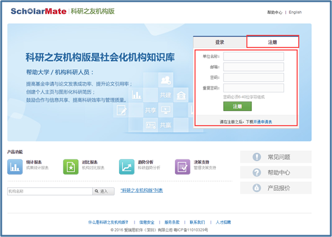
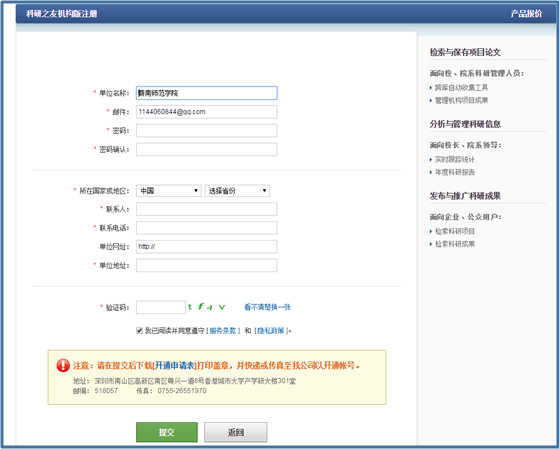

申请开通科研之友机构版


1、注册管理员账号
访问http://sie.scholarmate.com，进入科研之友机构版的登录注册页面。

2、补充详细信息
点击【注册】后，进入补充单位详细信息页面。提交前需下载好【开通申请表】。

3、传真【开通申请表】
下载【开通申请表】，填写完毕后传真至我公司，我公司将审核您提交的资料并将开通结果邮件回复给您。
传真：0755-26551970
客服热线：0755-26712272
版权申明：本文系“科研之友”公号原创的文章，如需转载请发信至邮箱：operations@scholarmate.com，如有未经授权转载，后果自负。
科研之友微信号：keyanzhiyou
投稿、意见，请直接回复或发信至：operations@scholarmate.com
分享与发现论文、专利、项目，提高科研影响力。

长按可识别图中二维码，关注科研之友微信公众号。